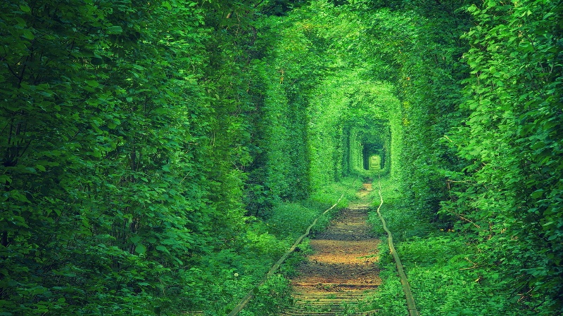
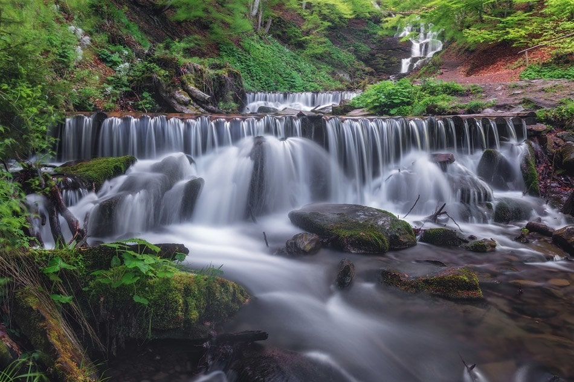
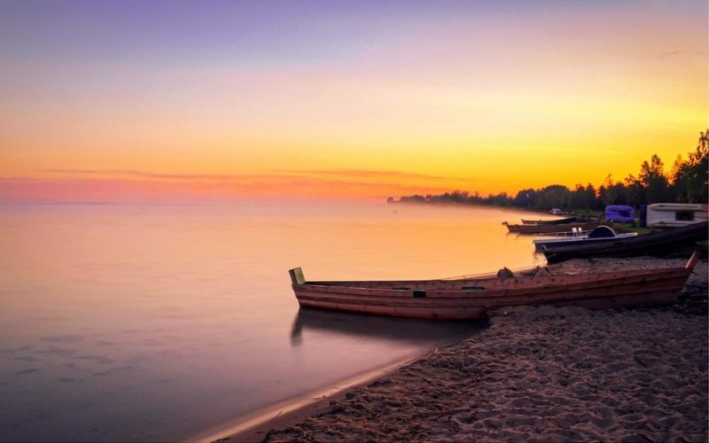
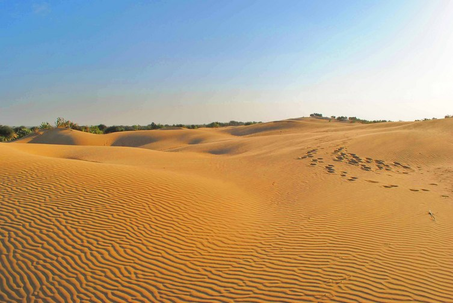
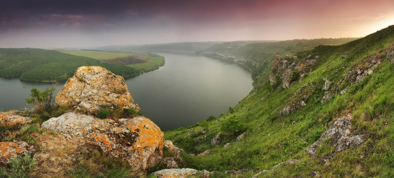
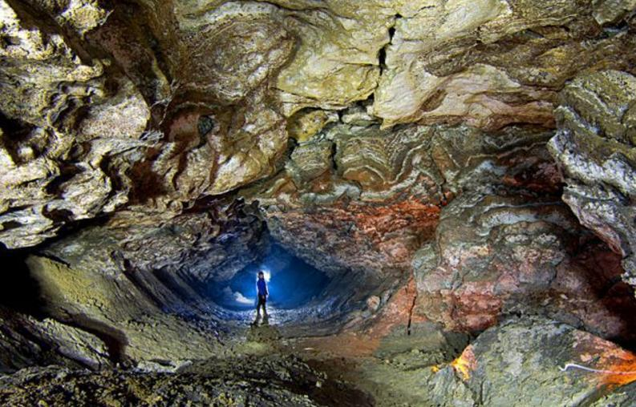
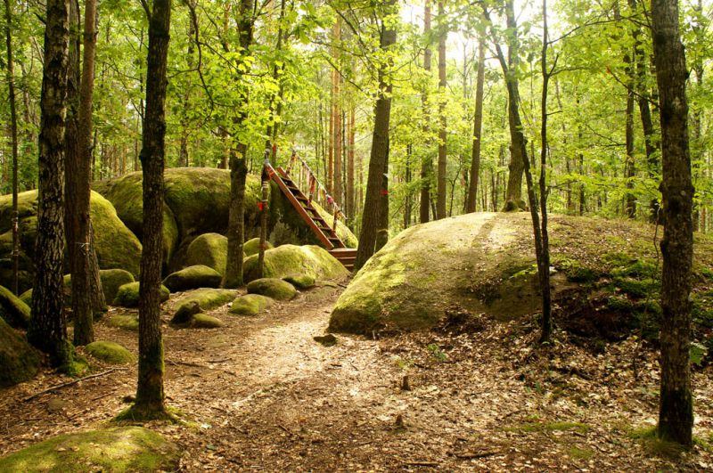
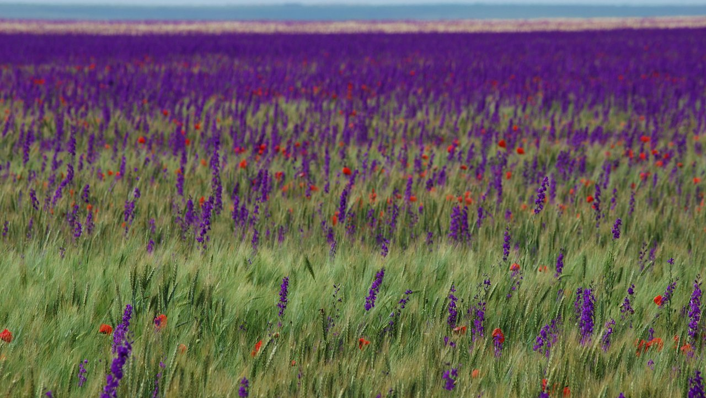

Вміст
- Тунель кохання
- Треба щось написати як приклад багатовкладенності
- Водоспад Шипіт
- Озеро Свитязь
- Олешківські піски
- Дністровський каньйон
- Оптимістична печера
- Кам’яне село (Камінне Село)
- Асканія-Нова
{kind=link}
{kind=link}
{kind=link}
1 Тунель кохання

Казковий тунель є ботанічним феноменом, створеним заростями дерев і кущів, які сплелися між собою над кілометровим відрізком залізниці, що з’єднує селища Клевань і Оржів на Волині. По дорозі тричі на добу курсує потяг, який ламає зростаючі гілки дерев, зберігаючи арочну форму тунелю. За легендою, якщо закохана пара пройде крізь тунель, загадавши бажання, воно обов’язково збудеться. Унікальний пам’ятник природи надихнув японського режисера Акійоші Імазакі зняти у 2014 році романтичну драму Клевань: Тунель кохання.
Де: Рівненська область, Рівненський район, село Клевань.
2 Водоспад Шипіт

Один з найкрасивіших водоспадів України розташований біля підніжжя гори Гемба в глибокій ущелині річки Пилипець. Струмені води спадають мальовничими каскадами із 14-метрової висоти. Водоспад є місцем паломництва туристів з усього світу. Щорічно з 1993 року недалеко від водоспаду проходить неформальний фестиваль, який збирає хіпі та представників інших субкультур і завершується святом Івана Купала. Події, що відбуваються на Шипоті, описав у своїй книзі “Трохи пітьми” письменник Любко Дереш
Де: Закарпатська область, Міжгірський район, село Пилипець.
3 Озеро Свитязь

Магічний ранок на озері Світязь, фото: Kateryna Synelnyk
Світязь – найбільше і найглибше озеро України природного походження, яке входить до групи Шацьких озер. Вода в ньому настільки прозора, що можна побачити дно навіть при 8-метровій глибині. Крім того, вона ще й цілюща: в її складі є срібло, гліцерин і йод. Дівчата відзначають, що після купання шкіра стає гладкою та еластичною. Береги озера відмінно підходять для літнього відпочинку
Де: Волинська область, Шацький район, селище Шацьк.
4 Олешевські піски

Дивно, але факт: в Україні є своя пустеля – Олешківські піски, які простягаються на 150 кілометри і вважаються найбільшим піщаним масивом Європи. Раніше тут були луки, але в 18-19 століттях сюди почали масово завозити овець, які знищили всю рослинність, а вітрова ерозія та безцільна вирубка лісу довершили справу. Влітку пісок нагрівається до 70 градусів. Як і в будь-який пустелі, тут є бархани висотою до 40 метрів і оазиси, а також трапляються справжні піщані бурі. А ще на глибині 300-400 метрів знаходиться прісне підземне озеро з дуже смачною водою.
Де: 30 кілометрів на схід від міста Херсон.
5 Дністровський каньйон

Травневий ранок на Дністрі
Каньйон утворений річкою Дністер і займає територію відразу чотирьох українських областей. Його загальна довжина становить близько 250 кілометрів. Каньйон являє собою долину, стрімкі схили якої досягають 250 метрів над водою. У деяких місцях скелі нагадують швейцарський сир – через численні гроти і печери. На території каньйону розташовано близько 100 пам’яток живої і неживої природи світового значення.
Де: Івано-Франківська, Тернопільська, Чернівецька та Хмельницька області.
6 Оптимістична печера

Оптимістична печера занесена в книгу рекордів Гіннеса як найдовша у світі гіпсова печера. Більше 240 кілометрів підземних ходів створюють величезний лабіринт. Печера була відкрита в 1966 році і до цих пір до кінця не звідана. Температура повітря тут протягом року постійна – від +9,5 до +10,5 градусів. Відвідування туристами можливе тільки у супроводі інструктора. Тут є спелеомузей і галерея підземного ліплення.
Де: Тернопільська область, Борщівський район, село Королівка.
7 Кам’яне село (Камінне Село)

Кам’яне село, яке вважається одним із найзагадковіших місць України, являє собою скупчення величезних валунів, розкиданих на кількох гектарах лісу. Вчені вважають, що валуни приніс льодовик, який рухався з півночі.
Але є і більш цікава версія. За легендою тут було звичайне село, куди одного разу прийшов старець. Він заходив у двір то до одного місцевого жителя, то до іншого і просив трохи хліба і води, але всі його проганяли. Тоді Бог, який насправді переховувався під личиною старця, розгнівався і перетворив все село на камені. Розташування каменів дійсно нагадує вулиці: тут є свої “будинки”, “церква”, “школа”. Туристи обов’язково відвідують камінь зі “слідами Бога”, який, за повір’ям, дає здоров’я і виконує бажання.
Де: Житомирська область, Олевський район, село Рудня-Замисловицька.
8 Асканія-Нова

Біосферний заповідник Асканія Нова
Унікальність біосферного заповідника Асканія-Нова у тому, що це єдина в Європі ділянка степу, якого ніколи не торкався плуг. Його загальна площа становить 11 тисяч гектарів. Крім традиційних мешканців степів, заповідник населяють тварини, завезені практично з усіх континентів: африканські зебри, антилопи, страуси, коні Пржевальського, туркменські кулани, бізони. Для бажаючих організовуються сафарі-тури. Також тут збереглися стародавні кургани і кам’яні скіфські баби.
Де: Херсонська область, Чаплинський район, селище Асканія-Нова.